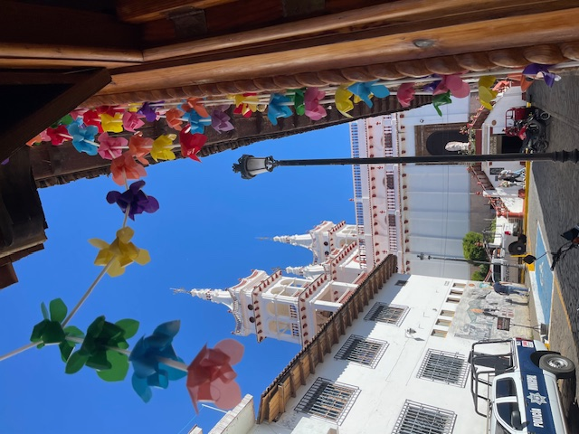

Family
I was raised my my Mexican parents and have two sisters. Growing up, my parents used to always take us to visit our family in Mexico since we were so close to the border in Arizona. It kept me closer to our culture and allows me to embrace it in every room I'm in. I am a first generation graduate who aspires to get more Latina women in tech.